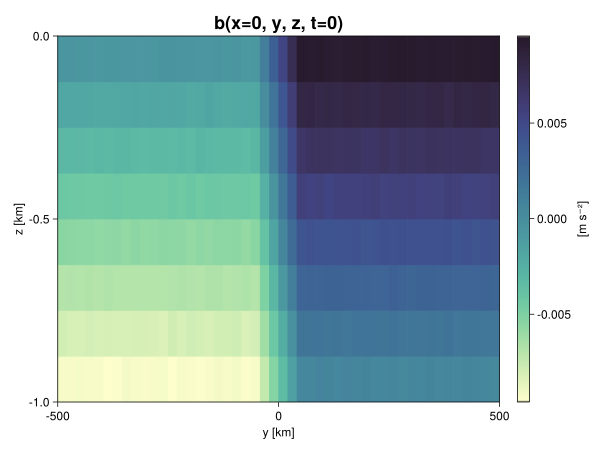

Baroclinic adjustment
In this example, we simulate the evolution and equilibration of a baroclinically unstable front.
Install dependencies
First let's make sure we have all required packages installed.
using Pkg
pkg"add Oceananigans, CairoMakie"using Oceananigans
using Oceananigans.UnitsGrid
We use a three-dimensional channel that is periodic in the x direction:
Lx = 1000kilometers # east-west extent [m]
Ly = 1000kilometers # north-south extent [m]
Lz = 1kilometers # depth [m]
grid = RectilinearGrid(size = (48, 48, 8),
x = (0, Lx),
y = (-Ly/2, Ly/2),
z = (-Lz, 0),
topology = (Periodic, Bounded, Bounded))48×48×8 RectilinearGrid{Float64, Periodic, Bounded, Bounded} on CPU with 3×3×3 halo
├── Periodic x ∈ [0.0, 1.0e6) regularly spaced with Δx=20833.3
├── Bounded y ∈ [-500000.0, 500000.0] regularly spaced with Δy=20833.3
└── Bounded z ∈ [-1000.0, 0.0] regularly spaced with Δz=125.0Model
We built a HydrostaticFreeSurfaceModel with an ImplicitFreeSurface solver. Regarding Coriolis, we use a beta-plane centered at 45° South.
model = HydrostaticFreeSurfaceModel(; grid,
coriolis = BetaPlane(latitude = -45),
buoyancy = BuoyancyTracer(),
tracers = :b,
momentum_advection = WENO(),
tracer_advection = WENO())HydrostaticFreeSurfaceModel{CPU, RectilinearGrid}(time = 0 seconds, iteration = 0)
├── grid: 48×48×8 RectilinearGrid{Float64, Periodic, Bounded, Bounded} on CPU with 3×3×3 halo
├── timestepper: QuasiAdamsBashforth2TimeStepper
├── tracers: b
├── closure: Nothing
├── buoyancy: BuoyancyTracer with ĝ = NegativeZDirection()
├── free surface: ImplicitFreeSurface with gravitational acceleration 9.80665 m s⁻²
│ └── solver: FFTImplicitFreeSurfaceSolver
└── coriolis: BetaPlane{Float64}We start our simulation from rest with a baroclinically unstable buoyancy distribution. We use ramp(y, Δy), defined below, to specify a front with width Δy and horizontal buoyancy gradient M². We impose the front on top of a vertical buoyancy gradient N² and a bit of noise.
"""
ramp(y, Δy)
Linear ramp from 0 to 1 between -Δy/2 and +Δy/2.
For example:
```
y < -Δy/2 => ramp = 0
-Δy/2 < y < -Δy/2 => ramp = y / Δy
y > Δy/2 => ramp = 1
```
"""
ramp(y, Δy) = min(max(0, y/Δy + 1/2), 1)
N² = 1e-5 # [s⁻²] buoyancy frequency / stratification
M² = 1e-7 # [s⁻²] horizontal buoyancy gradient
Δy = 100kilometers # width of the region of the front
Δb = Δy * M² # buoyancy jump associated with the front
ϵb = 1e-2 * Δb # noise amplitude
bᵢ(x, y, z) = N² * z + Δb * ramp(y, Δy) + ϵb * randn()
set!(model, b=bᵢ)Let's visualize the initial buoyancy distribution.
using CairoMakie
# Build coordinates with units of kilometers
x, y, z = 1e-3 .* nodes(grid, (Center(), Center(), Center()))
b = model.tracers.b
fig, ax, hm = heatmap(y, z, interior(b)[1, :, :],
colormap=:deep,
axis = (xlabel = "y [km]",
ylabel = "z [km]",
title = "b(x=0, y, z, t=0)",
titlesize = 24))
Colorbar(fig[1, 2], hm, label = "[m s⁻²]")
fig
Simulation
Now let's build a Simulation.
simulation = Simulation(model, Δt=20minutes, stop_time=20days)Simulation of HydrostaticFreeSurfaceModel{CPU, RectilinearGrid}(time = 0 seconds, iteration = 0)
├── Next time step: 20 minutes
├── Elapsed wall time: 0 seconds
├── Wall time per iteration: NaN days
├── Stop time: 20 days
├── Stop iteration : Inf
├── Wall time limit: Inf
├── Callbacks: OrderedDict with 4 entries:
│ ├── stop_time_exceeded => Callback of stop_time_exceeded on IterationInterval(1)
│ ├── stop_iteration_exceeded => Callback of stop_iteration_exceeded on IterationInterval(1)
│ ├── wall_time_limit_exceeded => Callback of wall_time_limit_exceeded on IterationInterval(1)
│ └── nan_checker => Callback of NaNChecker for u on IterationInterval(100)
├── Output writers: OrderedDict with no entries
└── Diagnostics: OrderedDict with no entriesWe add a TimeStepWizard callback to adapt the simulation's time-step,
wizard = TimeStepWizard(cfl=0.2, max_change=1.1, max_Δt=20minutes)
simulation.callbacks[:wizard] = Callback(wizard, IterationInterval(20))Callback of TimeStepWizard(cfl=0.2, max_Δt=1200.0, min_Δt=0.0) on IterationInterval(20)Also, we add a callback to print a message about how the simulation is going,
using Printf
wall_clock = Ref(time_ns())
function print_progress(sim)
u, v, w = model.velocities
progress = 100 * (time(sim) / sim.stop_time)
elapsed = (time_ns() - wall_clock[]) / 1e9
@printf("[%05.2f%%] i: %d, t: %s, wall time: %s, max(u): (%6.3e, %6.3e, %6.3e) m/s, next Δt: %s\n",
progress, iteration(sim), prettytime(sim), prettytime(elapsed),
maximum(abs, u), maximum(abs, v), maximum(abs, w), prettytime(sim.Δt))
wall_clock[] = time_ns()
return nothing
end
simulation.callbacks[:print_progress] = Callback(print_progress, IterationInterval(100))Callback of print_progress on IterationInterval(100)Diagnostics/Output
Here, we save the buoyancy, $b$, at the edges of our domain as well as the zonal ($x$) average of buoyancy.
u, v, w = model.velocities
ζ = ∂x(v) - ∂y(u)
B = Average(b, dims=1)
U = Average(u, dims=1)
V = Average(v, dims=1)
filename = "baroclinic_adjustment"
save_fields_interval = 0.5day
slicers = (east = (grid.Nx, :, :),
north = (:, grid.Ny, :),
bottom = (:, :, 1),
top = (:, :, grid.Nz))
for side in keys(slicers)
indices = slicers[side]
simulation.output_writers[side] = JLD2OutputWriter(model, (; b, ζ);
filename = filename * "_$(side)_slice",
schedule = TimeInterval(save_fields_interval),
overwrite_existing = true,
indices)
end
simulation.output_writers[:zonal] = JLD2OutputWriter(model, (; b=B, u=U, v=V);
filename = filename * "_zonal_average",
schedule = TimeInterval(save_fields_interval),
overwrite_existing = true)JLD2OutputWriter scheduled on TimeInterval(12 hours):
├── filepath: ./baroclinic_adjustment_zonal_average.jld2
├── 3 outputs: (b, u, v)
├── array type: Array{Float64}
├── including: [:grid, :coriolis, :buoyancy, :closure]
└── max filesize: Inf YiBNow we're ready to run.
@info "Running the simulation..."
run!(simulation)
@info "Simulation completed in " * prettytime(simulation.run_wall_time)[ Info: Running the simulation...
[ Info: Initializing simulation...
[00.00%] i: 0, t: 0 seconds, wall time: 47.999 seconds, max(u): (0.000e+00, 0.000e+00, 0.000e+00) m/s, next Δt: 20 minutes
[ Info: ... simulation initialization complete (38.223 seconds)
[ Info: Executing initial time step...
[ Info: ... initial time step complete (37.134 seconds).
[06.94%] i: 100, t: 1.389 days, wall time: 1.547 minutes, max(u): (1.235e-01, 1.199e-01, 1.514e-03) m/s, next Δt: 20 minutes
[13.89%] i: 200, t: 2.778 days, wall time: 24.549 seconds, max(u): (2.149e-01, 1.819e-01, 1.723e-03) m/s, next Δt: 20 minutes
[20.83%] i: 300, t: 4.167 days, wall time: 24.604 seconds, max(u): (2.847e-01, 2.575e-01, 1.904e-03) m/s, next Δt: 20 minutes
[27.78%] i: 400, t: 5.556 days, wall time: 24.590 seconds, max(u): (3.720e-01, 3.765e-01, 1.885e-03) m/s, next Δt: 20 minutes
[34.72%] i: 500, t: 6.944 days, wall time: 24.651 seconds, max(u): (4.754e-01, 5.549e-01, 1.968e-03) m/s, next Δt: 20 minutes
[41.67%] i: 600, t: 8.333 days, wall time: 24.114 seconds, max(u): (6.146e-01, 9.129e-01, 3.038e-03) m/s, next Δt: 20 minutes
[48.61%] i: 700, t: 9.722 days, wall time: 24.170 seconds, max(u): (9.264e-01, 1.116e+00, 4.013e-03) m/s, next Δt: 20 minutes
[55.56%] i: 800, t: 11.111 days, wall time: 25.073 seconds, max(u): (1.220e+00, 1.321e+00, 4.819e-03) m/s, next Δt: 20 minutes
[62.50%] i: 900, t: 12.500 days, wall time: 25.922 seconds, max(u): (1.356e+00, 1.161e+00, 6.454e-03) m/s, next Δt: 20 minutes
[69.44%] i: 1000, t: 13.889 days, wall time: 26.068 seconds, max(u): (1.339e+00, 1.196e+00, 4.296e-03) m/s, next Δt: 20 minutes
[76.39%] i: 1100, t: 15.278 days, wall time: 25.111 seconds, max(u): (1.329e+00, 1.290e+00, 3.882e-03) m/s, next Δt: 20 minutes
[83.33%] i: 1200, t: 16.667 days, wall time: 25.088 seconds, max(u): (1.386e+00, 1.050e+00, 3.328e-03) m/s, next Δt: 20 minutes
[90.28%] i: 1300, t: 18.056 days, wall time: 25.862 seconds, max(u): (1.469e+00, 1.052e+00, 4.068e-03) m/s, next Δt: 20 minutes
[97.22%] i: 1400, t: 19.444 days, wall time: 24.251 seconds, max(u): (1.393e+00, 1.098e+00, 2.877e-03) m/s, next Δt: 20 minutes
[ Info: Simulation is stopping after running for 7.366 minutes.
[ Info: Simulation time 20 days equals or exceeds stop time 20 days.
[ Info: Simulation completed in 7.373 minutes
Visualization
All that's left is to make a pretty movie. Actually, we make two visualizations here. First, we illustrate how to make a 3D visualization with Makie's Axis3 and Makie.surface. Then we make a movie in 2D. We use CairoMakie in this example, but note that using GLMakie is more convenient on a system with OpenGL, as figures will be displayed on the screen.
using CairoMakieThree-dimensional visualization
We load the saved buoyancy output on the top, bottom, north, and east surface as FieldTimeSerieses.
filename = "baroclinic_adjustment"
sides = keys(slicers)
slice_filenames = NamedTuple(side => filename * "_$(side)_slice.jld2" for side in sides)
b_timeserieses = (east = FieldTimeSeries(slice_filenames.east, "b"),
north = FieldTimeSeries(slice_filenames.north, "b"),
bottom = FieldTimeSeries(slice_filenames.bottom, "b"),
top = FieldTimeSeries(slice_filenames.top, "b"))
B_timeseries = FieldTimeSeries(filename * "_zonal_average.jld2", "b")
times = B_timeseries.times
grid = B_timeseries.grid48×48×8 RectilinearGrid{Float64, Periodic, Bounded, Bounded} on CPU with 3×3×3 halo
├── Periodic x ∈ [0.0, 1.0e6) regularly spaced with Δx=20833.3
├── Bounded y ∈ [-500000.0, 500000.0] regularly spaced with Δy=20833.3
└── Bounded z ∈ [-1000.0, 0.0] regularly spaced with Δz=125.0We build the coordinates. We rescale horizontal coordinates to kilometers.
xb, yb, zb = nodes(b_timeserieses.east)
xb = xb ./ 1e3 # convert m -> km
yb = yb ./ 1e3 # convert m -> km
Nx, Ny, Nz = size(grid)
x_xz = repeat(x, 1, Nz)
y_xz_north = y[end] * ones(Nx, Nz)
z_xz = repeat(reshape(z, 1, Nz), Nx, 1)
x_yz_east = x[end] * ones(Ny, Nz)
y_yz = repeat(y, 1, Nz)
z_yz = repeat(reshape(z, 1, Nz), grid.Ny, 1)
x_xy = x
y_xy = y
z_xy_top = z[end] * ones(grid.Nx, grid.Ny)
z_xy_bottom = z[1] * ones(grid.Nx, grid.Ny)Then we create a 3D axis. We use zonal_slice_displacement to control where the plot of the instantaneous zonal average flow is located.
fig = Figure(resolution = (1600, 800))
zonal_slice_displacement = 1.2
ax = Axis3(fig[2, 1],
aspect=(1, 1, 1/5),
xlabel = "x (km)",
ylabel = "y (km)",
zlabel = "z (m)",
xlabeloffset = 100,
ylabeloffset = 100,
zlabeloffset = 100,
limits = ((x[1], zonal_slice_displacement * x[end]), (y[1], y[end]), (z[1], z[end])),
elevation = 0.45,
azimuth = 6.8,
xspinesvisible = false,
zgridvisible = false,
protrusions = 40,
perspectiveness = 0.7)Axis3()We use data from the final savepoint for the 3D plot. Note that this plot can easily be animated by using Makie's Observable. To dive into Observables, check out Makie.jl's Documentation.
n = length(times)41Now let's make a 3D plot of the buoyancy and in front of it we'll use the zonally-averaged output to plot the instantaneous zonal-average of the buoyancy.
b_slices = (east = interior(b_timeserieses.east[n], 1, :, :),
north = interior(b_timeserieses.north[n], :, 1, :),
bottom = interior(b_timeserieses.bottom[n], :, :, 1),
top = interior(b_timeserieses.top[n], :, :, 1))
# Zonally-averaged buoyancy
B = interior(B_timeseries[n], 1, :, :)
clims = 1.1 .* extrema(b_timeserieses.top[n][:])
kwargs = (colorrange=clims, colormap=:deep)
surface!(ax, x_yz_east, y_yz, z_yz; color = b_slices.east, kwargs...)
surface!(ax, x_xz, y_xz_north, z_xz; color = b_slices.north, kwargs...)
surface!(ax, x_xy, y_xy, z_xy_bottom ; color = b_slices.bottom, kwargs...)
surface!(ax, x_xy, y_xy, z_xy_top; color = b_slices.top, kwargs...)
sf = surface!(ax, zonal_slice_displacement .* x_yz_east, y_yz, z_yz; color = B, kwargs...)
contour!(ax, y, z, B; transformation = (:yz, zonal_slice_displacement * x[end]),
levels = 15, linewidth = 2, color = :black)
Colorbar(fig[2, 2], sf, label = "m s⁻²", height = Relative(0.4), tellheight=false)
title = "Buoyancy at t = " * string(round(times[n] / day, digits=1)) * " days"
fig[1, 1:2] = Label(fig, title; fontsize = 24, tellwidth = false, padding = (0, 0, -120, 0))
rowgap!(fig.layout, 1, Relative(-0.2))
colgap!(fig.layout, 1, Relative(-0.1))
save("baroclinic_adjustment_3d.png", fig)
Two-dimensional movie
We make a 2D movie that shows buoyancy $b$ and vertical vorticity $ζ$ at the surface, as well as the zonally-averaged zonal and meridional velocities $U$ and $V$ in the $(y, z)$ plane. First we load the FieldTimeSeries and extract the additional coordinates we'll need for plotting
ζ_timeseries = FieldTimeSeries(slice_filenames.top, "ζ")
U_timeseries = FieldTimeSeries(filename * "_zonal_average.jld2", "u")
B_timeseries = FieldTimeSeries(filename * "_zonal_average.jld2", "b")
V_timeseries = FieldTimeSeries(filename * "_zonal_average.jld2", "v")
xζ, yζ, zζ = nodes(ζ_timeseries)
yv = ynodes(V_timeseries)
xζ = xζ ./ 1e3 # convert m -> km
yζ = yζ ./ 1e3 # convert m -> km
yv = yv ./ 1e3 # convert m -> km49-element Vector{Float64}:
-500.0
-479.1666666666667
-458.3333333333333
-437.5
-416.6666666666667
-395.8333333333333
-375.0
-354.1666666666667
-333.3333333333333
-312.5
-291.6666666666667
-270.8333333333333
-250.0
-229.16666666666666
-208.33333333333334
-187.5
-166.66666666666666
-145.83333333333334
-125.0
-104.16666666666667
-83.33333333333333
-62.5
-41.666666666666664
-20.833333333333332
0.0
20.833333333333332
41.666666666666664
62.5
83.33333333333333
104.16666666666667
125.0
145.83333333333334
166.66666666666666
187.5
208.33333333333334
229.16666666666666
250.0
270.8333333333333
291.6666666666667
312.5
333.3333333333333
354.1666666666667
375.0
395.8333333333333
416.6666666666667
437.5
458.3333333333333
479.1666666666667
500.0Next, we set up a plot with 4 panels. The top panels are large and square, while the bottom panels get a reduced aspect ratio through rowsize!.
set_theme!(Theme(fontsize=24))
fig = Figure(resolution=(1800, 1000))
axb = Axis(fig[1, 2], xlabel="x (km)", ylabel="y (km)", aspect=1)
axζ = Axis(fig[1, 3], xlabel="x (km)", ylabel="y (km)", aspect=1, yaxisposition=:right)
axu = Axis(fig[2, 2], xlabel="y (km)", ylabel="z (m)")
axv = Axis(fig[2, 3], xlabel="y (km)", ylabel="z (m)", yaxisposition=:right)
rowsize!(fig.layout, 2, Relative(0.3))To prepare a plot for animation, we index the timeseries with an Observable,
n = Observable(1)
b_top = @lift interior(b_timeserieses.top[$n], :, :, 1)
ζ_top = @lift interior(ζ_timeseries[$n], :, :, 1)
U = @lift interior(U_timeseries[$n], 1, :, :)
V = @lift interior(V_timeseries[$n], 1, :, :)
B = @lift interior(B_timeseries[$n], 1, :, :)Observable([-0.009361203186982152 -0.008119604386227709 -0.0068930683447877145 -0.005642246097371686 -0.004395460114262569 -0.0031025295861397714 -0.0018561274352361205 -0.0006253839816936564; -0.009376332017807638 -0.008164303138290379 -0.006872765220981586 -0.005603411342159766 -0.004386590438786104 -0.0031317803696530398 -0.0018740487115597034 -0.0006220086542687643; -0.009392302392269628 -0.008107777929327669 -0.006893579602255669 -0.005613444335782773 -0.004370289343962489 -0.003141532420716148 -0.0018651270161474363 -0.0006118852716540186; -0.009386602912620659 -0.008103705039073884 -0.006887454035127047 -0.005625155382275991 -0.0043834586650376385 -0.0031431166600718818 -0.0018719821429829982 -0.0006309872640628669; -0.00936500784747794 -0.008135645614278991 -0.006872935445567096 -0.005596293650622254 -0.0044041406491444205 -0.0031471003863576454 -0.0018631396161255468 -0.0006114795068606067; -0.009361823262648478 -0.008136253649084312 -0.0068815743995855085 -0.005601659649464046 -0.004394290407707967 -0.0031362467523043977 -0.0018980071477579024 -0.0006315692602063952; -0.009386884686060573 -0.00812926052740475 -0.006879092639465762 -0.005617193994985171 -0.004384016242054916 -0.003112127441657663 -0.0018836382547488444 -0.0006191568763818542; -0.009373668663577724 -0.008125759565983407 -0.006865074784453703 -0.005636658027758028 -0.004394463939678516 -0.003098721123275116 -0.001859914088637799 -0.0006408456358528179; -0.009390822309840861 -0.008127721183845103 -0.006872614390526176 -0.005606644513608285 -0.004375075231989428 -0.003110138958379957 -0.0018643114450674536 -0.0006338788719659778; -0.009369079300628804 -0.008113976551785253 -0.006851344250757479 -0.0056017459742099445 -0.004355499224401743 -0.0031296829630525313 -0.0018569180763662008 -0.0006376248315507827; -0.00937178052313741 -0.008136257571921634 -0.006864399626124811 -0.005623988783298793 -0.0043610423480128484 -0.00311959745174235 -0.0018765662171277423 -0.0006236135421673765; -0.009376241936683252 -0.008143791693201502 -0.006866574778402786 -0.005609183092618242 -0.0043876303645151195 -0.0031300761069885715 -0.0018933035114777333 -0.0006168873015463464; -0.009370454875181448 -0.00814441514709976 -0.006872968869290116 -0.005627320541113299 -0.004382034453170698 -0.0031321283972644454 -0.0018611237939451287 -0.0006141710753602645; -0.009363578384767543 -0.008132159152454566 -0.006880888006944959 -0.005632231401464825 -0.004382284138230701 -0.00312295039702179 -0.0018564785416495758 -0.0006319954553030044; -0.00938128994196769 -0.00811531013994769 -0.006880414401893683 -0.005630834118838601 -0.004370570810976501 -0.0031087509190506402 -0.0018837342226405596 -0.0006100372823112152; -0.009383809429867315 -0.008131325810346736 -0.006901152292020037 -0.005632436828516946 -0.00438677879785369 -0.0031101519595860203 -0.0018793235969181805 -0.0006249971693758533; -0.0093683437060325 -0.008128576135265225 -0.006865804973387945 -0.005624228704248627 -0.004385114808275278 -0.0031032414870034303 -0.0018605642497516851 -0.0006201367623095486; -0.009365623723503821 -0.008101454578435714 -0.006855908050193776 -0.005610503777580835 -0.004394653949922196 -0.0031361366322937116 -0.0018773123614561373 -0.0006436145012787052; -0.00935593937327332 -0.0081170978451576 -0.006868738599663657 -0.005640013341521537 -0.0043534702424316485 -0.0031239809062440105 -0.001891593971073268 -0.0006371634494183191; -0.009383102089277917 -0.008122797053497074 -0.0068650915759319135 -0.005637111192679168 -0.004368489343975517 -0.0031205197987972007 -0.0018990688631649146 -0.0005973987735913778; -0.009381822938695357 -0.008116745378847377 -0.006863838528327062 -0.005635842578411925 -0.004395066492081317 -0.0031302499770335082 -0.001881425616305097 -0.0006463985237479971; -0.009378959082106338 -0.008115449084663882 -0.006879302403952247 -0.005613678371192212 -0.004361896118708208 -0.00314661365648007 -0.0018593756759026638 -0.0006323458512463869; -0.007490684707641395 -0.00624389440113184 -0.005007085272353496 -0.0037856032277618604 -0.0025099271235332226 -0.001241990682895338 -4.585648076409194e-6 0.0012357512130429372; -0.005407232537554599 -0.004163888536577997 -0.0028952796535700646 -0.0016743358646091522 -0.0004074501246423064 0.0008218483574563739 0.0020591313782511176 0.0033641362668184907; -0.0033369339048885346 -0.002077450042510347 -0.0008292833332840627 0.00040729175334976967 0.0016668336598479932 0.0028988092051397906 0.004166126913067158 0.005413608977438163; -0.0012566125376922736 -3.6186207525040768e-6 0.0012450850768356396 0.0025214410178418752 0.003725624586354674 0.004999900562110019 0.006244826268066731 0.007501087420772022; 0.0006193052563850247 0.0018826033615611294 0.003139999962895742 0.004386094375220608 0.005610468647225325 0.006885236916316297 0.008115550858710683 0.009373200532879248; 0.0006587795247131877 0.0018794416246857275 0.0031267097747396063 0.004395752472074192 0.00559887957322948 0.00688051949439688 0.008128785576817147 0.009389148770175526; 0.0006226612716789787 0.0018916083796730488 0.0031353268466817134 0.0043658808464270326 0.0056106442213167676 0.0068790512664269055 0.008108758781317426 0.009384852155696635; 0.0006278829265153272 0.0018723120827800297 0.003109478213476675 0.004396051571922081 0.005613978052120858 0.006869057403421465 0.008145889954468898 0.00938126845838599; 0.0006124564343762907 0.0018783001517457562 0.003130574576986896 0.004379980338661282 0.005617426872655532 0.006876893080094014 0.008102279420847064 0.009383616153725521; 0.0006316989720761111 0.0018678650654487506 0.003085430038909409 0.004359440439521136 0.005632122906083591 0.006869050856558387 0.008133150359829765 0.009393052628439867; 0.0006356806134283885 0.0018922846841417874 0.003134683349754999 0.00438773875989121 0.005612371284514324 0.006851952176754344 0.008125268148583664 0.009374312971572351; 0.0006339139926163804 0.001862594313935782 0.0031318079071146992 0.0043603974918430604 0.005646034085362285 0.006884027872140535 0.008119607522249004 0.009400183630565528; 0.0006406699779224287 0.0018758625235623901 0.0031197146759988216 0.004398349599568105 0.00563935803590447 0.0068646764221235975 0.008126308455405197 0.009371598354504044; 0.0006190740226982923 0.0018843543986708509 0.0031271102662631185 0.004389454678613126 0.0056431803972105295 0.00687113816044245 0.008106760993383071 0.009346555774184398; 0.0006025119839900971 0.0018877690386721743 0.0031246590821799474 0.004357684354566475 0.005628022402584935 0.006878951059822944 0.008111165871231072 0.009388815923016528; 0.000633239423093081 0.0018809400007781384 0.0031285688428041546 0.00439754219215317 0.005615215675139568 0.00690033101717387 0.008133232724983699 0.00937173696244026; 0.0006316374929555057 0.00190294596108635 0.0031231011365757274 0.004401458393732224 0.0056373323787306485 0.0068871549058942905 0.008151271976205052 0.009385842903655083; 0.0006236952236971645 0.0018939358636536118 0.003132401233210652 0.004366823052057115 0.005611483696716054 0.006878758033785876 0.008134837293245814 0.00938913334591327; 0.0006390995095428043 0.0018786875650448976 0.0031267644918194135 0.0044121490237668355 0.005623669484235498 0.006888890559268924 0.008142543041024216 0.009366450336537614; 0.0006355162304842638 0.0018622276644037821 0.0031308033585857055 0.004355464754122444 0.005618874043767245 0.0068758088403181004 0.008136267054966981 0.009393840657297549; 0.000615411184948905 0.001882799162061336 0.003118071805168902 0.0043698341841947015 0.0056195644766099595 0.006866488597127562 0.008113740893184788 0.00939365356728252; 0.0006265031963943291 0.0018675133260616153 0.0031217537956565954 0.004387609812004935 0.005633864891385366 0.006869790659395496 0.008119031035321696 0.009370483163056493; 0.0006306891823659133 0.001873320321472799 0.003149879846465987 0.004371156196386477 0.005594298044914042 0.006876086684158347 0.008096675648817324 0.009382927152907313; 0.000639937007560645 0.0018681793852424122 0.0031464415758461956 0.0043692657496173645 0.005627858275320623 0.006882244683800081 0.008125566753190329 0.009398939116145; 0.000604200122125179 0.0018678832458368488 0.0031188684626282277 0.004381287141129334 0.005640055655934004 0.006898257931252378 0.008134082815409527 0.009412458940207822; 0.0006312399933498578 0.0018838015229262859 0.003136436170647829 0.004375548094774946 0.005647919000591666 0.006861736894221117 0.00813074501813347 0.00933854418919832])
and then build our plot:
hm = heatmap!(axb, xb, yb, b_top, colorrange=(0, Δb), colormap=:thermal)
Colorbar(fig[1, 1], hm, flipaxis=false, label="Surface b(x, y) (m s⁻²)")
hm = heatmap!(axζ, xζ, yζ, ζ_top, colorrange=(-5e-5, 5e-5), colormap=:balance)
Colorbar(fig[1, 4], hm, label="Surface ζ(x, y) (s⁻¹)")
hm = heatmap!(axu, yb, zb, U; colorrange=(-5e-1, 5e-1), colormap=:balance)
Colorbar(fig[2, 1], hm, flipaxis=false, label="Zonally-averaged U(y, z) (m s⁻¹)")
contour!(axu, yb, zb, B; levels=15, color=:black)
hm = heatmap!(axv, yv, zb, V; colorrange=(-1e-1, 1e-1), colormap=:balance)
Colorbar(fig[2, 4], hm, label="Zonally-averaged V(y, z) (m s⁻¹)")
contour!(axv, yb, zb, B; levels=15, color=:black)Finally, we're ready to record the movie.
frames = 1:length(times)
record(fig, filename * ".mp4", frames, framerate=8) do i
n[] = i
endThis page was generated using Literate.jl.